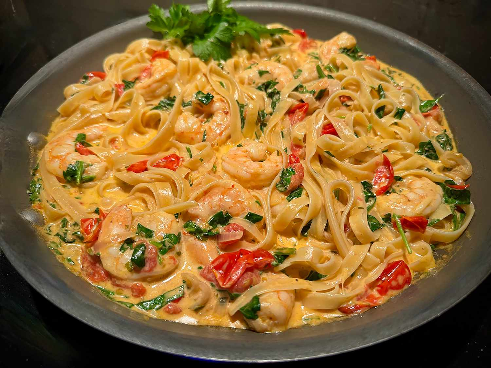

Fettuccine with Shrimp, Tomatoes, and Spinach

Description
This one-skillet fettuccine with shrimp, tomatoes, and spinach cream sauce,
bright and fresh-tasting, cooks quickly. We love it with a simple tossed salad
and a great bread.
Ingredients
- 8 ounces fettuccine
- 1 tablespoon unsalted butter
- 1 tablespoon olive oil
- 4 cloves garlic, divided
- 1 pound shrimp
- salt andnfreshly ground pepper
- 1/2 cup thunly sliced shallot
- 1/2 teaspoon red pepper flakes
- 2 cups halved cherry tomatoes
- 1/4 cup minced flat-leaf parsley
- 1/2 cup dry white wine
- 2 cups fresh spinach, roughly chopped
- 1 cup heavy cream
- flat-leaf parsley sprigs for garnish (optiona)
Steps
- Fill a large pot with lightly salted water and bring
to a rolling boil. Cook fettuccine at a boil until
tender yet firm to the bite, about 8 minutes. Drain;
reserving about 1/2 cup pasta water.
- Meanwhile, heat butter and olive oil in a large skillet
over medium heat until butter is melted. Slice 2 garlic
cloves, add to the skillet, and cook until lightly browned,
about 2 minutes. Remove garlic from the skillet and discard.
- Carefully add shrimp to the skillet with a pinch of salt and
pepper. Cook until shrimp is pink, opaque, and curled into a
“C” shape, 2 to 3 minutes per side. Remove from the skillet and keep warm.
- Add shallot to the skillet and cook, stirring, until softened, 2 to 3
minutes; stir in red pepper flakes. Mince remaining 2 garlic cloves;
add to skillet and cook, stirring, until fragrant, about 30 seconds.
- Add sliced tomatoes, minced parsley, and white wine. Bring to a boil,
and cook for 2 to 3 minutes. Stir in chopped spinach; cook until just
wilted and bright green. Return cooked shrimp to the skillet; stir in
cream. Season to taste with salt and pepper.
- Remove from heat. If sauce is too thick, stir in 1 tablespoon pasta
water at a time, until desired consistency is achieved. Stir in pasta,
and ladle into serving bowls. Garnish with additional flat leaf parsley sprigs.